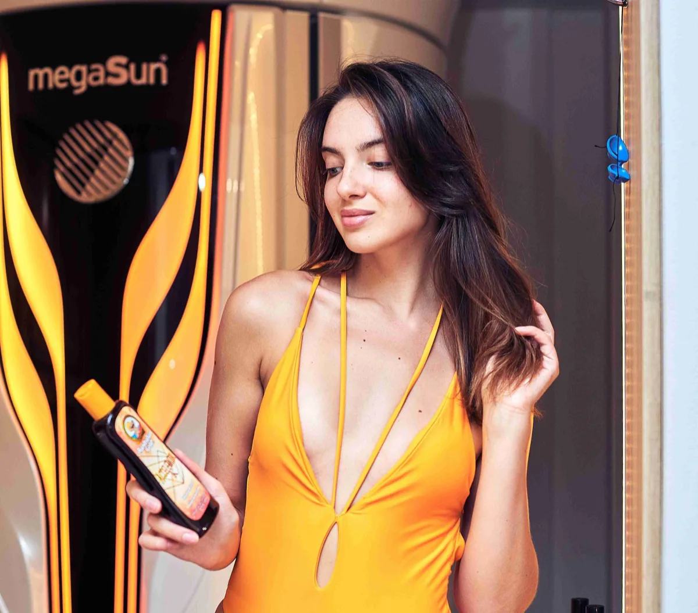
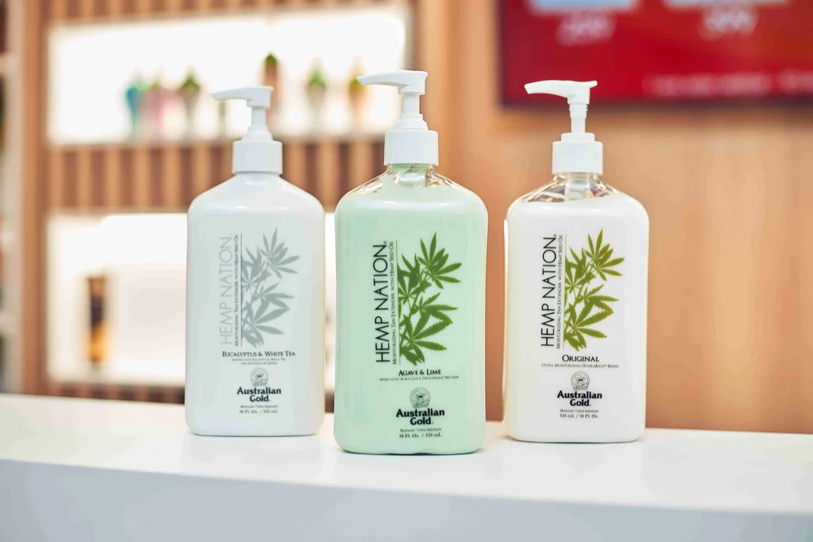

Dacă te gândești să încerci pentru prima dată solarul sau abia ai început să mergi la ședințe de bronzare, este important să ai la îndemână câteva cunoștințe de bază. Bronzarea la solar poate oferi rezultate excelente, dar numai atunci când este abordată corect. Iată 8 sfaturi esențiale care te vor ajuta să obții un bronz frumos, uniform și de durată, fără a-ți supune pielea la riscuri inutile.
1. Exfolierea prealabilă — baza unui bronz uniform
Înainte de prima ședință la solar, exfolierea pielii este un pas esențial pe care mulți începători îl omit. Celulele moarte de pe suprafața pielii împiedică razele UV să ajungă uniform la melanocite, rezultând un bronz pătrat și inegal. Folosește un scrub blând cu 24 de ore înainte de ședință pentru a îndepărta stratul de celule moarte și a pregăti pielea pentru o bronzare uniformă. Acordă o atenție specială zonelor cu piele mai groasă, cum ar fi coatele, genunchii și gleznele.
2. Durata primelor ședințe — mai puțin înseamnă mai mult
Unul dintre cele mai frecvente greșeli ale începătorilor este dorința de a obține un bronz intens încă din prima ședință. Aceasta este o capcană care poate duce la arsuri și iritații. Primele tale ședințe ar trebui să dureze 3–6 minute maximum, indiferent de tipul tău de piele. Scopul acestor prime sesiuni scurte este de a stimula producția de melanină, nu de a bronza intens. Crește treptat durata ședințelor pe măsură ce pielea ta se adaptează la expunerea UV.
3. Respectă pauzele dintre ședințe — 48 de ore minimum
Pielea are nevoie de timp pentru a procesa expunerea UV și a produce melanină. Nu reveni la solar mai devreme de 48 de ore după o ședință, mai ales la început. Ședințele prea frecvente nu accelerează bronzul, ci pot provoca roșeață, descuamare și sensibilizare excesivă a pielii. Respectând pauzele recomandate, dai pielii tale șansa de a-și dezvolta protecția naturală și de a construi un bronz solid și durabil.

4. Alege loțiunile potrivite pentru tipul tău de piele
Nu toate loțiunile de bronzare sunt la fel. Există formule speciale pentru pielea deschisă, cea medie și cea închisă, fiecare cu concentrații diferite de ingrediente active. Dacă ești începător, optează pentru o loțiune cu un nivel moderat de acceleratori de bronzare și ingrediente hidratante. Personalul SUNCLUB te poate ajuta să alegi loțiunea potrivită în funcție de tipul tău de piele și de obiectivele pe care le ai.
5. Aplică loțiunea corect — tehnica contează
Aplicarea loțiunii de bronzare nu este ca hidratantul obișnuit. Folosește cantități generoase și masează produsul circular, asigurând o acoperire uniformă pe întreaga suprafață a corpului. Acordă atenție zonelor de tranziție, cum ar fi gleznele, genunchii, coatele și zona gâtului, unde pielea tinde să absoarbă produsele neuniform. O aplicare corectă poate face diferența dintre un bronz perfect și unul cu zone mai deschise sau mai închise.
6. Dușul după bronzare — așteptați minimum 3 ore
După ce ieși din cabina de solar, rezistă tentației de a face duș imediat. Procesul de bronzare continuă în piele timp de câteva ore după expunerea UV, pe măsură ce melanina migrează spre suprafața epidermei. Făcând duș prea repede, întrerupi acest proces și poți pierde o parte din bronzul obținut. Recomandăm să aștepți minimum 3 ore înainte de duș. Dacă folosești loțiuni cu bronzant cosmetic, pauzele mai lungi sunt chiar mai benefice.

7. Hidratarea post-ședință — cheia unui bronz durabil
Expunerea UV deshidratează pielea, chiar și în doze moderate. Aplicarea unui hidratant de calitate imediat după duș (sau după perioada de așteptare) ajută la menținerea bronzului și la prevenirea descuamarii premature. Optează pentru loțiuni after-tan care conțin ingrediente nutritive, cum ar fi aloe vera, unt de shea sau uleiuri naturale. Pielea bine hidratată își menține culoarea mai mult timp și arată mai sănătoasă și mai luminoasă.
8. Cum să prelungești bronzul — sfaturi de menținere
Odată ce ai obținut bronzul dorit, menținerea lui devine prioritatea principală. Hidratează pielea zilnic, evită băile fierbinți prelungite și apa cu clor cât mai mult posibil, deoarece acestea accelerează descuamarea. Folosește produse de tip „tan extender" între ședințele de solar — acestea conțin ingrediente care mențin melanina activă mai mult timp. Continuă să vizitezi solarul de 1–2 ori pe săptămână pentru a înlocui celulele pigmentate care se regenerează natural.
Sfat rapid pentru începători: Răbdarea este cel mai important ingredient al unui bronz reușit. Primele 3 ședințe sunt de activare, nu de bronzare intensă. Respectă timpii, hidratează constant și folosește loțiuni profesionale — rezultatele vor veni sigur!